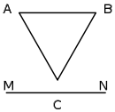
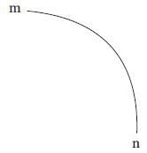

Беседа 696 от 3877 · Беинса Дуно
Трансформиране на енергиите
– Само светлият път на Мъдростта води към Истината.
– Тя постоянно ни весели.
Тайна молитва.


Същият закон се отнася и до вашето вътрешно естество. Докато вашата вяра е здрава и докато вашите ръце – волята ви – са силни, вие ще можете безопасно да слизате и да се качвате по това въже, но ако вярата и волята ви не са силни, вие ще паднете. Всички хора, които падат, те са духовно пияни – нищо повече. Когато човек изгуби своето съзнание, той е в положение на духовно пиянство. И знаете ли кога хората падат? В духовния свят има особени питиета, които като се пият, предизвикват психическо опияняване. Хората започват да си въобразяват като турците един рай на щастие и блаженство, което не заслужават обаче. А какво нещо е незаслуженото? – Всяко нещо, за което не си готов, е незаслужено за тебе.
Ще ви дам още един пример, за да поясня мисълта си. Ако някоя майка даде на своето новородено дете твърда храна, то непременно ще умре. Това дете се нуждае само от рядка храна. Следователно, щастието и блаженството, които вие търсите, още не са заради вас. Затова най-подходящата храна за съвременния свят това са скърбите и страданията. От скръб и страдание никой не се е развалил досега, но от щастие и блаженство половината от хората в света са се повредили. Това, че се раждат такива противоположности в света, е все от тия блага, за които хората, при сегашното си съзнание, не са готови. За пример, някои от учениците казват: аз имам известни мъчнотии, но не мога да издържа на тях. Защо няма да издържите? Кои са причините на това? Това показва, че вие губите вяра в себе си. Значи, вие губите вяра във вашите ръце, във вашето въже. Щом изгубите вяра във вашето въже, щом изгубите вяра във вашите ръце, непременно падането ще дойде. При сегашните условия на живота ви успехът зависи от силата на вашето въже и вашите ръце.
Сега какво трябва да направите, за да може една мъчнотия или една тежест да седи на повърхността на някоя течност? Да кажем, имате 1 кг. желязо с малък обем и го хвърлите в морето. Какво ще стане с него? – Ще се намери на дъното на морето. Какво трябва да направите с това желязо, за да го заставите според законите на физиката да седи на повърхността на водата? – Обемът или плоскостта му да се увеличи. Ако направите плоскостта на това парче желязо голяма около 2–3 метра ще потъне ли? – Няма да потъне. Защо? Защото измества по-голямо количество вода и с толкова по тегло става по-леко. В този случай и съпротивлението на водата е по-голямо, отколкото е тежестта на желязото. Следователно същия закон ще приложите и при мъчнотиите. Когато имате една мъчнотия, малка по обем, но сбита по материя, вие психически ще разширите обема ѝ, за да олекне и да не потъва във вашето съзнание, дето би причинила болезнени състояния. Да кажем, че имате една малка мъчнотия, боли ви пръст и не можете да търпите. За да се излекувате или по-право, за да можете да търпите, представете си, че някой ви е забил един голям гвоздей в ръката. Тази по-голяма болка сега ще измести по-малката. Ако можете да произведете умствено това забиване на гвоздея в ръката си, в съзнанието ви ще стане трансформиране на болката. Значи, за да издържите малките мъчнотии в живота си, ще си представите, че има по-големи от тях.
Представете си сега друг случай в живота. Някои от вас, учениците, върви по улицата с неколцина свои приятели, изважда кесията си, иска да купи нещо, но няма нито пет пари в нея. Краката му започват да треперят от срам, от честолюбие и си казва: как ще се издам сега пред приятелите си, че нямам нито пет пари? Защо ми е този живот? Терзае се, но мълчи, никому нищо не казва. Представете си сега друга перспектива. Този ученик се намира в един далечен град, пак без пет пари в джоба си, но няма нито един познат, нито един приятел. В кой от двата случая задачата е по-мъчна? – При втория случай, разбира се.
Често у съвременните хора се заражда едно тягостно състояние, едно неразположение на духа. За пример, ставате сутрин, но сте неразположени, гневни, пуснали сте пояса си и казвате: Днес съм неразположен, не ме бутайте. Вие не се спирате да разберете защо сте неразположени. Причината на това неразположение може да е вътрешна, може да се крие нейде в подсъзнанието, съзнанието или самосъзнанието. Вие може да сте подпушени в една от тия три области. Какво трябва да правите тогава? Ще се вдълбочите дълбоко в себе си и ще се запитате: защо се нервирам, защо не мога да търпя? Ще се стремите да си дадете един искрен отговор, като пред Бога, и само така ще премахнете причината, която ви дразни, безпокои.
Сега ще ви изнеса два психологически противоположни момента. Представете си, че някое лице ви е обидило кръвно и вие казвате: Аз никога не мога да простя на това лице. Обаче вие като ученик имате нужда от 10 000 лева, търсите някой да ви помогне, да ви услужи с тия пари. Отивате при един ваш приятел, искате да ви помогне, но той казва: Нямам, много съжалявам. Отивате при втори, трети, всички си повдигат раменете, казват: Нямаме. Всеки казва: Бих желал да ти помогна, но… Да кажем, че лицето, което ви е обидило, е единственото, което може да ви услужи, готово е да ви даде 10 000 лева. Този човек казва: Нека дойде при мене, аз ще му услужа. Вие казвате: Не, не отивам при него. Вие се намирате пред една дилема. Как ще постъпите? Вашата чест е ангажирана с тия 10 000 лева, една неприятност. От друга страна, трябва да отидете при лицето, което ви е нанесло обидата –втора неприятност. Коя от двете ще изберете? Като дойде по-голямата мъчнотия, вие ще забравите вашата обида. Нуждата от 10 000 лева ще заличи обидатави и вие ще кажете: Хайде, аз ще му простя, ще забравя обидата Туй става в живота. Това е един остен, който природата употребява против своенравните хора. Тя ни впрегне в хомота и казва: Право в браздата ще караш! Вземе остена, мушне те с него и ти тръгваш право в браздата – нищо повече.
Ще ви задам въпроса: в какво седи достойнството на човека? Как бихте отговорили на този въпрос? Достойнството на един слуга седи в това, да изпълнява добре работата, която му е дадена. Достойнството на един ученик седи в това, да учи уроците си добре. Достойнството на един проповедник седи в това, да проповядва добре. Достойнството на един писател седи в това, да пише по възможност най-хубави неща. Достойнството на един лекар седи в това, да лекува според най-добрите методи. Питам: ами вашето достойнство като ученици в какво седи? – В приложението на окултните закони в живота си. Ако не приложите тия правила в живота си, всичко е безполезно. Ако е за знания, вие имате такива. Вие имате знания и по физика, и по химия, и по астрономия, и по история, по всички науки изобщо, но едно нещо ви липсва: не знаете как да прилагате окултните закони при разните условия на живота. Следователно, щом ви дойде някоя мъчнотия в живота, каквато и да е тя, кажете си: аз зная, има духовен път, има възможност за разрешение на тази задача, тя не е една от най-големите, напротив, тя е една от най-малките мъчнотии за мен. И действително така е. Най-големите мъчнотии в живота се дават на най-великите хора, а вие още не минавате за велик хора. Тъй щото вашите мъчнотии са едни от най-малките в света и като тъй вие можете да се справяте с тях.
Чувам някои от вас да казват: аз искам да бъда добър! Вие можете да бъдете добри моментално. За да бъде човек добър, не се изисква нито един час време, а даже нито една минута, то е извън времето и пространството. Всички хора, които стават добри, те стават такива в един момент. То е състояние на съзнанието, което зависи от интензивността на неговата светлина. Проблесне ли веднъж светлината в съзнанието, всички утайки от него моментално изчезват. И в Писанието се казва: „Човек може да се новороди“. За този момент на съзнанието именно се говори. Той е един кратковременен момент: изведнъж може да станете добри и изведнъж можете да станете лоши.
Представете си сега, че имате едно прекрасно разположение на духа, но иде при вас една ваша другарка, към която не храните добри чувства. Какво ще направите? Ще си кажете: Днес ли намери да дойде? И след като тя се отдалечи от вас, вие изгубвате всичкото разположение на духа си. Защо? Отде знае тази ваша другарка, че вие сте неразположени към нея? Знаете ли онзи анекдот за Диогена, в който се разправя подобно нещо? Диоген като бил на 82 годишна възраст, един ден решава да се отдалечи на самота някъде, като си казва: „Толкова години прекарах между хората, работих и се занимавах все с тях, този ден ще посветя само за себе си“. Отдалечава се от хората, сяда на сянка под една круша и почва да си мечтае: „Колко прекрасен е животът, колко хубаво е всичко това, което вековете са създали!“ Но ето, към обед идва един селянин при него за някакъв съвет. Диоген като го видял, понамръщил се малко, дал му съвет, какъвто трябвало, и после си казал: „Ей, Диогене, ти препоръчваш на хората търпение и спокойствие, а сам в този случай не издържа. Ти се отдели тук под крушата на сянка, за да бъдеш в самота, но какво е виновен този селянин, отде знае той, че не искаш днес гости? Искаш ли като се сърдиш така да изгубиш това, което си спечелил през тия 82 години? Не, ти не трябва да се сърдиш на хората, когато идват при тебе.“
Сега аз ви питам: вие имате ли право да се сърдите на вашите мъчнотии? – Нямате право. Мъчнотиите това са гости, това са селяните, които ви намират и когато сте седнали под крушата на сянка. Мъчнотиите са живи. Някоя мъчнотия ви вижда, че седите под крушата на сянка, отправя се към вас като този селянин и си казва: Дози човек там е философ, няма работа. Аз ще отида при него да разреши мъчнотията ми". А вие кипвате и казвате: Днес ли намери този човек да дойде при мен? Тъкмо имах едно поетическо, вдъхновено разположение, щях да открия нещо, но работата ми се развали. Не, вие не трябва да разсъждавате така. Тия резки енергии, тия резки прояви, които имате по някой път, ви карат да казвате: Ще пропадна в тази работа, не мога да устоя, този път не е за мен, той е за по-способните, за по-умните, аз имам толкова слабости. И вие започвате да си правите известни уговорки. Не, кажете си правото: Аз искам да следвам този път, или: Не искам да следвам. Искрени трябва да бъдете към себе си. Защото вие трябва да знаете, че причината не е вън от вас, тя е вътре във вас. Аз говоря това нещо на вас, учениците, които искате да използвате живота си разумно. Трябва да знаете, че щастието, което търсите, се намира най-първо във вашия ум; после във вашето сърце а след това и във вашата воля. От хармоничното съчетание на тия три сили в живота ви зависи и вашето щастие.
Сега аз не говоря за тъгите, за скърбите, които вие изживявате. Често някои от вас изпадат в меланхолични състояния и ви дохожда мисълта да се самоубиете, да се отровите или да се хвърлите от някоя скала, висока около 500 м. Щом имате такова желание да се хвърлите от скалата и да умрете, направете това нещо съзнателно. Как? Качете се на един камък 3 метра висок и скочете от него. После на друг, по-голям, именно около 5 метра. И тъй, качвайте се последователно на все по-голям я по-голям камък, докато достигнете до камък с височина 1 метра – опитайте се да скочите от там. Наблюдавайте какво ще преживеете при този опит. При този опит вие ще кажете: Аз разреших вече въпроса, няма какво да се самоубивам. А така вие действате много бързо. Дойдете до някоя спънка в живота си и току изведнъж кажете: Аз ще се самоубия! Да се самоубиеш, това е най-големият опит, към който ще пристъпиш. Първо ти ще направиш най-малкия опит и постепенно ще вървиш към по-големите. Друг някой казва: Аз искам да се самоубия, ще си тегля един куршум. Казвам: почакай, направи по-малкия опит! Вземи една игла, бодни я 1 см в кожата си и виж ще те боли ли. След това бодни я 2 см и пак следи какво ще усетиш и как ще вземеш да разсъждаваш. Опити трябва да правите! Дойде ли ви някоя мисъл за самоубийство, вземете една игла и ще видите, че още преди да я забиете нейде в тялото си, всички мрачни мисли и желания за самоубийство ще изчезнат и вие ще си кажете: Не, не трябва да се самоубивам, животът е сериозно нещо.
Следователно дойде ли някоя отрицателна мисъл у вас, не се старайте да я изпъдите от себе си, поразгледайте я, поразговаряйте се с нея, попитайте я: „Как дойде при мен? Нямаш ли баща, майка, роднини? Интересуват ли се във вашия свят от мен? Кой ти даде моя адрес?“ Този разговор е един от методите за превръщане на енергиите. Като се поразговорите с тази отрицателна мисъл, ще почувствате едно постепенно вътрешно утихване в себе си, докато най-после ѝ кажете: Аз изменям своето мнение за теб. Всички те представяха лоша като мен, но сега виждам, че си толкова нещастна, колкото и аз съм нещастен. И тази отрицателна мисъл ще ви отговори: Понеже и ти си нещастен като мен, никаква пакост няма да ти направя. Всичко това подразбира, че всяка енергия в човешкия ум трябва да се превърне и да ѝ се даде място да се роди и живее. Това е, за което се казва на едно място в Писанието: „Не противи се злому!“ Дойде във вас лоша мисъл, дайте ѝ място. Дойде добра мисъл, дайте ѝ място!
Превръщането на духовните енергии става по същия начин, както и физическите енергии. За да превърнете известна физическа енергия от едно състояние в друго, за да ѝ дадете по-голяма интензивност, какво правите? Първото средство, което употребявате, е огънят. Същото нещо е и в духовния свят.
Засега от всинца ви се изисква повече живот, защото той носи в себе си топлина. Много от съвременните хора умират от малко живот, от малко топлина. Под думата „живот“ разбирам един съзнателен живот, а не едно просто вегетиране. При съзнателния живот посоката на движението ни трябва да е строго определена. Живот без обект не е живот. Обект трябва да имате. Щом разбирате как да трансформирате вашите мрачни, отрицателни мисли, вие ще можете да помагате и на себе си, и на другите. Минеш покрай твоя сестра, ученичка, гледаш я нещо неразположена, но си казваш: Какво се е нацупила тази сестра, какво е проточила носа си, защо не търпи? Да, но утре ти се нацупиш, твоят нос се проточва. Това нацупване ходи на гости у всички. Няма човек в света, който да не се е нацупвал. Всички съвременни хора, от детинството си до края на живота си, все са се цупили. Дълги години ще минат, докато хората отвикнат от това цупене. Аз съм виждал учени, философи хора, които също се цупят. То е едно особено хипнотическо състояние, след което после сами се чудят на себе си как се подават на такива разположения. Тия неща са ясни за мен, трябва да бъдат вече ясни и на вас. И когато човек е обхванат от това хипнотическо състояние, не знае какво прави – въпреки волята си върши всичко, каквото му диктува това състояние. Това става всякога, когато човек изгуби съзнанието си. Щом съзнанието му се върне, той ще разбере нещата. Колкото и да сте силен, колкото силно и да плувате, влезете ли в това течение, то ще ви отнесе. Ако влезете в морето и вълните са много силни, лодката ви може да се обърне. Ето защо човек трябва да има правилно разбиране за ония сили, с които ще има да се бори.
Всички мъчнотии, които срещате в живота си, са определени точно за вас. Има обаче такива мъчнотии, които се натъкват на пътя ви и вие ги поемате, но те не са ваши, не са определени за вас, вие сами ги предизвиквате. (– Как ще познаем кои мъчнотии са определени за нас?) – Тази мъчнотия, която е определена за вас, вие сами ще можете да я дигнете от земята, ще я турите на гърба си и ще продължавате пътя си. А за тази мъчнотия, която не е ваша, ще се мъчите ден, два, три и повече да я вдигнете и пак няма да успеете. Затова оставете тая мъчнотия настрана и си вървете по пътя. Мнозина от вас, за пример, седят, размишляват и си казват: Как ще се оправи съвременното общество? Тази мисъл не е за вас. Тя е една мъчнотия, която не се отнася нито за младите, нито даже и за религиозните хора. Мнозина са си задавали този въпрос, правили са опити да го разрешат, но всички безуспешно. Тази мъчнотия чака своя герой. Кой е той? – Този, който ще може да дигне тази мъчнотия. Когато дойде този герой, ще дигне тази мъчнотия на гърба си и ще тръгне напред. Така ще знаете: туй, което вие може да вдигнете, туй, което вие сами можете да носите, то е заради вас. В този свят всеки взима по една торба, носи я и казва: този торба е моята. И като ме запитват някои хора как ще се оправи света, аз ще им отговоря: когато всички хора вдигнат своите торби с мъчнотии, светът ще се оправи. Това разумно носене на торбите със своите мъчнотии аз наричам „трансформиране на енергиите“. И най-красивото нещо в живота ви е в даден момент да можете да трансформирате едно ваше състояние. Например, вие сте недоволни нещо. Как ще трансформирате това ваше недоволство? Представете си, че сте две личности, че у вас живеят едновременно две Ганки за пример. Едната Ганка е недоволната, а другата не е. Нека втората Ганка каже на първата - Ти си се нещо поразсърдила, но чакай, аз ще ти изпея нещо Като и изпее една, две, три песни, нека я попита после: Сега доволна ли си от мене? Тя ще ѝ каже: Какво си се развеселила, разсмяла, бъди малко по-сериозна, не ти прилича да се държиш така. Първата Ганка е още сериозна, недоволна и си казва: Аз трябва да бъда сериозна, защото и животът е сериозен, строг. Втората Ганка ще си каже: Аз пък не мога да бъда сериозна, ще се посмея, ще се повеселя и ще взема половината от твоите страдания. Нека след това тази весела Ганка да цитира един стих от Писанието на сърдитата Ганка или да ѝ прочете едно стихотворение и да ѝ каже след това: Слушай Ганке, ти си добра моя сестричка, аз те обичам, хайде да си попеем заедно. Тогава тази, сърдитата Ганка, ще каже: Така ли, много добре, аз ей сега ще се развеселя. Ако някой слуша отвън, че се разговаряш със себе си, ще каже: На този човек дъската му трябва да е мръднала. Ами не е ли мръднала дъската на онзи човек, който е много сериозен? Какво означава мръдването на някоя дъска? Чудни са хората, когато говорят за мръдване на дъски! Че това не е някаква философия! Ако вие затворите в един сандък някои умрял човек, той ще мърда ли? – Няма да мърда. Ако пък затворите един жив човек в този сандък, ще мърда ли? – Ще мърда. Тогава, кое от двете неща е по-добро. – Да мърда човек, разбира се. Значи като кажем, че някому мръднала дъската, подразбирам, че вътре има жив човек. Ето истинското разсъждение по този въпрос. Щом ти мръдне дъската, кажи си: Ганке, аз се много радвам, че ти е мръднала дъската. Това показва, че си жива. Съвременните хора са изопачили едно истинско положение в живота и казват: Дъската на този човек е мръднала. Мърда ли ти дъската, радвай се, жив си. Не ти ли мърда дъската, тогава да се опасяваш. Хората считат, че някой човек е положителен, че някоя работа е сигурна, когато дъските не се мърдат.
Използвайте всички ваши състояния като живи уроци, като живи опити. Дойдеш в едно интензивно състояние, възбудиш се, кажи си: Колко съм енергичен днес, мога да върша работа. Ученичка си, разгневила си се нещо, вземи метлата и си кажи: Браво, Ганке, колко си спретната, как хубаво метеш, много те харесвам, като тебе няма друга. Ела ми и втори път на гости. Това е практически начин за трансформиране на енергията. По този начин вие ще можете да учите по-добре, защото еднообразието убива човека. Ако човек съсредоточава ума си все към една и съща посока, мозъчната му енергия отслабва и остава в застой, а природата не обича еднообразието.
И тъй, с веселото си разположение вие без да знаете ще пренесете деятелността си нагоре, към вашите духовни центрове. Веселостта е качество от духовен характер. Само високо духовните хора, само разумните хора могат да бъдат весели. В Писанието се казва: „Да се весели Господ в своите дела“. И Господ се весели, затова аз ви препоръчвам веселостта като едно от най-ефикасните средства за лекуване на много ваши недъзи. Недъзите ви ще дойдат, ще се проявят, а с веселостта си не само ще се лекувате, но ще дадете един тласък на ума, сърцето и волята си към по-интензивна деятелност. Затова ви давам веселостта на Ганка за пример. В дадения случай Ганка е образец, коефициент за всички други. Не всички хора обаче са весели. Някои хора са весели по естество, затова могат лесно да се лекуват. У други центърът на веселието е много слабо развит, те са песимистични по натура и затова виждат само мрачното в живота. Не, в живота има толкова много хубости, красоти и облага, които той трябва да види.
Та ще трансформирате мъчнотиите, които идват в живота ви. Няма да гледате на мрачната, на тъмната страна в живота. Често някои от вас казват: може да се повредя от много учене. Окултната история не помни нито един случай, записан в нейните анали, дето някой човек да е полудял от много учене. Хората не полудяват от много учение, но това, което разваля живота на хората, са безполезните тревоги, не обаче и онази чиста, ясна мисъл. Чистата мисъл уякчава мозъка, уякчава цялата нервна система, затова аз бих ви препоръчал: мислете интензивно, но не се тревожете! Не говоря за мисъл, свързана със страх. Такава мисъл съдържа отрова в себе си.
Следователно щом имате една малка спънка в живота си, създайте мислено на мястото ѝ по-голяма. По това аз ще ви дам ред упражнения за каляване на волята ви. Какво разбирате под думата „калена воля“? Калено желязо, за пример, е това, което първоначално е било меко и после чрез нагряване на огън и потапян в студена вода изведнъж се втвърдява. По аналогия на това, ние разсъждаваме така: всички тела изобщо, както и всички меки тела специално, съдържат в себе си скрита топлина. това показва, че те са минали през огъня, но не и през водата. Добре, желязото, което е калено и притежава голяма твърдост, с какво ще можем да му придадем и друго качество, а именно: да бъде пак калено, но да е гъвкаво, да не се чупи. Тогава казвам: ако в човешката воля се вложи повече електрическа енергия, тя става силна, но крехка. Такава воля, макар че не е слаба, но като дойдат срещу нея повече мъчнотии и с по-голяма сила, отколкото тя може да издържи, счупва се. Ето защо на човешката воля трябва да се придаде един важен елемент – мекота. Аз считам мекотата в човешката воля за едно от качествата на разумния живот. Само разумният човек може да бъде мек – той съдържа повече магнетизъм в себе си.
Какъв метод ще прилагате срещу мъчнотиите в живота? Допуснете, че имате една отвесна гладка площ, която се бомбардира от неприятеля. В това положение тя ще претърпи големи повреди. Ако същата площ е в хоризонтално положение и също така гранатите я обстрелват, и в това положение тя ще претърпи големи повреди. Но ако направим тази площ корубеста, гранатите ще падат наклонено върху нея и няма да предизвикват такива повреди. В такова състояние трябва да бъдем и ние, за да се справяме разумно с мъчнотиите в живота. Какво означава корубестото състояние? – То означава магнетичното състояние у човека. Ето защо ние трябва да направим плоскостта на нашето съзнание корубеста, за да може противодействащата сила, обстрелванията да не му причинят никаква вреда. Лъчът на падане не трябва да образува прав ъгъл с плоскостта. Вие трябва да проучвате този закон добре. Щом срещнете една мъчнотия, която се отправя върху площта на вашето съзнание и образува с него ъгъл равен на 90 градуса или прав ъгъл, вие ще се справите много мъчно с нея, тя ще произведе във вас взрив, експлозия. При тия условия тази мъчнотия представлява една психическа бомба. За да избегнете тия експлозии, вие така трябва да огъвате площта на вашето съзнание, че с посоката, от която иде мъчнотията, да се образува ъгъл, равен на 30–35 градуса. Само по този начин може да се образува едно отклонение, едно отблъскване на силите, които биха причинили тези големи повреди Това може да направи всеки от вас. Вземете следния прост пример, който се случва често между учениците: вие дължите на някой ваш приятел пари, които няколко пъти сте обещавали да върнете, но не устоявате на обещанието си. Най-после той решава да ви набие и един ден влиза в стаята ви. Какво ще направите в този момент? – Ще посрещнете този ваш приятел и ще му кажете: Приятелю, не се безпокой, аз ще ти върна парите заедно с припадащите им се лихви и с всички други загуби, които съм ти причинил. Кажете ли така, въпросът веднага се изглажда и приятелят ви е петдесет на сто обезоръжен.
И тъй, да се справи човек със себе си, да се справи със силите, които са вложени в него, това е най-трудното нещо в света, то е дълбока наука. Та първото важно нещо е да проучвате естеството си с вложените в него сили още от миналите си съществувания.
Всичко това, което ви говорих за мъчнотиите, трябва да прилагате разумно.
Прочете се резюме от темата „Икономия и пестеливост“.
Френологически разгледан, човека, у когато любостяжанието е силно развито, че минава границата и у когото обичта към живота е също силно развита, заражда се в него чувството на пестеливост, т.е. голяма любов към парите и този човек започва да пести. А онзи човек, който икономисва, всякога има предвид да употреби икономисаното за някаква по-висша цел. Например той ще икономиса пари от облеклото си, от някои нужди, за да може да си купи книги. Само разумният човек може да икономисва. Той е същевременно и пестелив, но тази пестеливост е под контрола на ума. В разумния човек чувството на пестеливост не е силно развито. Той пести пари за . Само разумният развито. Той пести пари за доставяне необходимите средства за неговото саморазвитие и самоусъвършнстване. Пестеливият човек пък пести пари за самото богатство… Има някои стари баби, на които като дадеш пари, ще ги вържат в 9 възела, спестяват ги. Преди годни дойде при мене един човек, извади една голяма кесия и почна да я развърта, много навита беше тя. След туй отвори устата ѝ, бръкна вътре, извади друга една кесия Гледам го, отвори и нейната уста, бръкна вътре извади и още една по-малка кесия, много хубаво направена. Отвори и нея, бръкна вътре и ръката му започна да трепери. Извади една монета и пак започна да завърта кесията. Този човек отвън още се познава, че е пестелив. Като скрива парите си в три кесии и ги върже в пазвата си, счита, че това е едно сигурно средство да ги запази. И дето мръдне, скоро ръката си около парите, никой не може да го обере. Икономистът все икономисва и все не му достигат средства, той не е богат човек, даже и дългове има. И забележете, съвременните европейски народи, които се занимават с пари, потънали са в дългове. И България също: с пари се занимава, все икономисва, а до уши е потънала в дългове. Българите не са пестеливи. В тях има развито чувството на икономия, но не разумна икономия.
За следващия път ще пишете върху тема № 17: „Произход на глаголните форми“. Не се плашете от тази тема, тя ви се дава като задача, ще мислите върху това как се е появил глаголът и по какъв път е минал, докато стигне до тия форми, в които го срещаме. Върху този въпрос може да напишете цяла теза, но вие ще пишете малко. Тази тема е доста трудна. Човек ли е създал глаголите или те са съществували преди това? (– Те са съществували преди човека.) Писанието казва: „Преди да е говорил човек, Господ е говорил“. Значи човешките глаголи са произлезли от Божествените. Човешкият глагол е само едно трансформиране на Божествения. По аналогия на горния въггрос ще ви запитам: окото ли се е създало по-рано или зрението? (– Зрението съществувало по-рано от окото.) Значи зрението е създало окото. Между съвременните учени има спор как се е появило окото. (– Има червеи без очи, които виждат обаче, светлината.) Това показва, че зрението е съществувало по-рано от окото и после се е създал органа на зрението. Тогава, според вас как ще класифицирате глаголните форми, към коя област принадлежат, дали към областта на ума, сърцето, душата или духа? (– Към областта на духа.) Значи разумното в човека говори.
Тайна молитва.
– Само светлият път на Мъдростта води към Истината.
– Тя постоянно ни весели.
15 лекция на Младежкия окултен клас, държана от Учителя на 27.I.1924 г. в гр. София